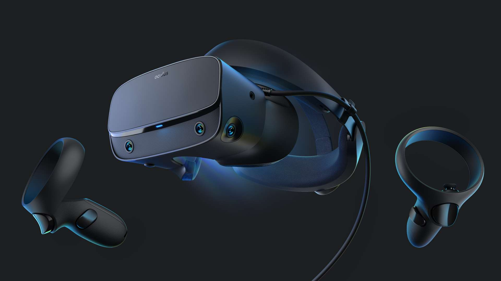
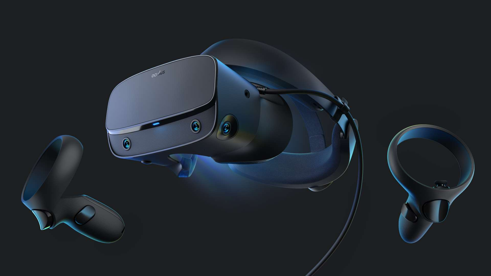

¿Tipos de gafas VR para consolas?
TIPOS DE GAFAS
El PLAYSTATION VR es la gafa más popular en consolas ya que la generación actual de consolas play es la que manda. Actualmente es la única gafa de VR disponible para consolas ya que la consola de microsoft no ha dado a conocer sus gafas de VR. Este año se van a lanzar la nueva generación de consolas y veremos las mejoras en tecnología que tendrán en tema de VR.
 
